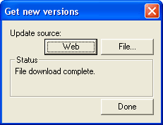

Once you have the XBee connected to a computer, you can experiment with connecting, configuring and upgrading the modules to the latest firmware.
PLEASE NOTE! These instructions are for the Adafruit XBee adapter kit and the Series 1 XBees that are sold in the Adafruit Shop. They may not work for ANY OTHER KIND OF XBEE OR ADAPTER KIT!
First, follow the wiring information in the previous section to connect up the XBee module. Note that if the module has correct power, the green LED should be blinking. If it isn't, check the wiring and verify that the XBee is getting power. Some versions or XBees the green LED doesnt blink, but it is on.

You'll need to figure out which serial port (COM) you are using. Plug in the FTDI cable, USB adapter, Arduino, etc. Under windows, check the device manager, look for "USB Serial Port"

Next you'll need to open up a terminal program. Windows comes with Hyperterminal, so just use that. Its under Start->Programs->Accessories->Communications->HyperTerminal. If you are running a different operating system just use whatever terminal program is available for it, such as ZTerm, minicom, etc. Make sure you understand how those work since a confusion could cause a big headache
When you open it up, it should ask you for a new connection. Lets name it "xbee"
Next You will select the COM port from the drop down menu, in my case its COM4.
Next, set the properties. Make sure you select 9600 bps, 8 bit, No parity, 1 stop bit and no flow control. Some programs may call this (9600 8N1). If the XBee has been configured for a different baud rate, of course, you should use that.
You will get a blank screen that says "Connected" in the bottom left corner. Now, change the setup by selecting File->Properties and then going to the Settings tab and clicking the ASCII Setup button. Make sure you are sending line ends with line feeds and also echoing local characters
Now type in +++ (three plus signs) in quick succession. If the XBee is connected up properly you will get an OK in response

If you got an OK that means the XBee is powered and wired up correctly! If its not working, check:
- Try again, be sure to wait 10 seconds between each attempt at typing in +++ and type the +'s quickly
- Is the module powered? Green LED should be blinking
- Are RX & TX swapped?
- Do you have the correct baud rate? By default it should be 9600 baud 8N1 no hardware handshake but if it has been used for something else the baud rate might be different.
Next try typing in +++ (receive OK) and then AT and press return to get another OK This is basically how we can configure the XBee, by sending it AT commands (they all start with AT for ATtention). After a while, the XBee times out of configuration mode and goes back to pass-through connection mode. So if you want to get back to config mode, just type in +++ and it will start responding again.
XBee's can be configured directly using a terminal program, or via a program such as Digi's XCTU program - which is specifically designed to make configuration easy.
For example, here are two examples of how configure the module's baud rate.
Using a terminal, you can change the baud rate using the ATBD command with a number afterwards that selects which baud rate to use:
- 0 = 1200
- 1 = 2400
- 2 = 4800
- 3 = 9600
- 4 = 19200
- 5 = 38400
- 6 = 57600
- 7 = 115200
-> +++ (get into AT mode)
<- OK
-> AT (check if xbee modem is responding)
<- OK
-> ATBD (get current baud rate as above)
<- 3 (9600)
-> ATBD 4 (set baud rate to 19200)
<- OK
-> ATBD (check again)
<- 4
-> ATWR (write the baud rate change to flash)
<- OK
Then reset the module, either by pulling the reset pin low for a second or removing power (unplugging cable, etc) To connect now, set the terminal to use 19200 baud, otherwise the module will not respond! You can set it back to 9600 baud by giving it the command ATBD 3 and then ATWRiting it to the flash
Digi/Maxstream wrote a little program to help configure XBees, its also the only way I know of to upgrade them to the latest firmware. Unfortunately it only runs on Windows
After installing and starting the program, select the COM port (COM4 here) and baud rate (9600 is default). No flow control, 8N1

To verify, click Test / Query
Hopefully the test will succeed. If you are having problems: check that the XBee is powered, wired correctly, the right COM port & baud rate is selected, etc.
The test will respond with the firmware version. Now we will change the baud rate for the modem using X-CTU
Go to the Modem Configuration tab. This is where the modem is configured and updated
Click on Modem Parameters -> "Read" to read in the current version and settings
You may want to skip ahead and upgrade the modem now, since it can be confusing if you dont have the latest firmware on it
Scroll down in the settings pane until you find the Serial Interfacing -> Interface Data Rate setting. Click on the setting and select 4 for 19200 baud.
Once that is selected, click on Write to program that setting in place. Don't forget to 'reboot' the module by power-cycling it or pulling the Reset pin low. Next time you want to connect, make sure to change the COM port setup to 19200 or you wont be able to talk to the module!
Theres a good chance your XBee is not running the latest firmware & there's a lot of features added, so next up is upgrading!
Go to the Modem Configuration tab. This is where the modem is configured and updated
Click Download new versions... and select to download the latest firmwares from the Web
->

Once you have downloaded the newest firmware, its time to upgrade!
Click on Modem Parameters -> "Read" to read in the current version and settings
Now you will know for sure what function set, version and settings are stored in the modem
Select from the Version dropdown the latest version available
Check the Always update firmware checkbox
And click Write to initialize and program the new firmware in!
Thats it, now you have the most recent firmware for your modem. You should now uncheck the Always update firmware checkbox. If you have problems, like for example timing out or not being able to communicate, make sure the RTS pin is wired up correctly as this pin is necessary for upgrading. FTDI cables are already set up for this so you shouldn't have a problem